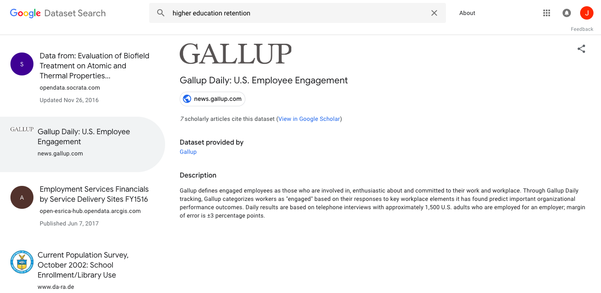
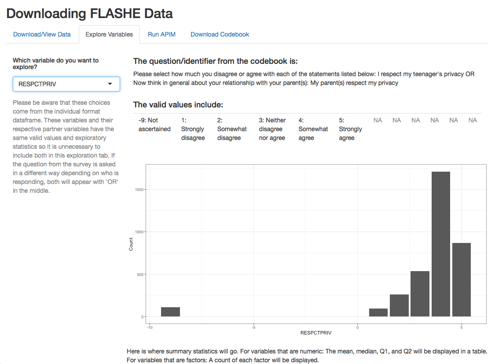
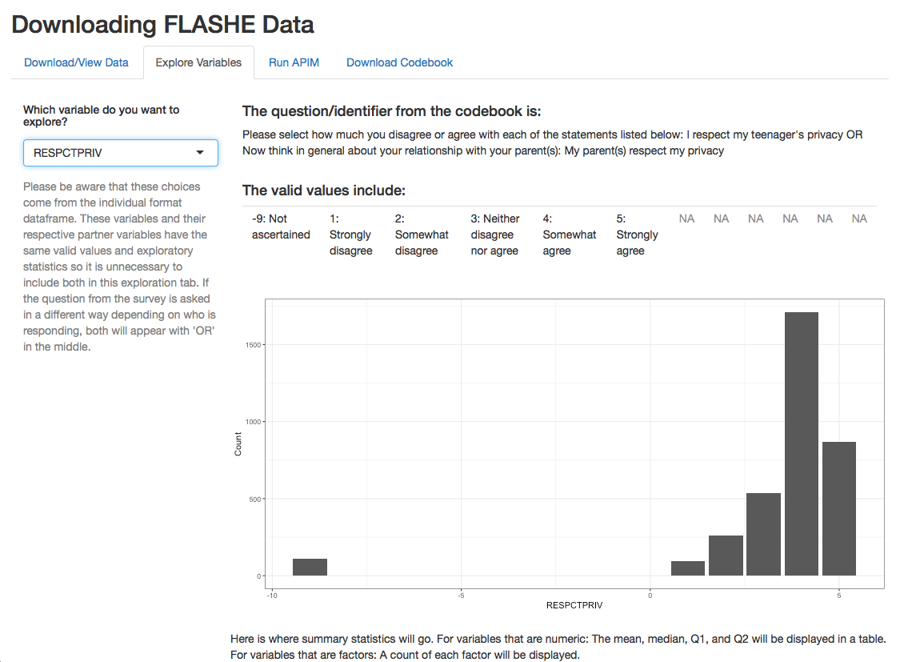

On September 5th, Google rolled out a new feature that had many researchers and Open Science proponents cheering: a dataset search. Previously, searching for usable data was often a nearly impossible task that limited data-driven discoveries. Now, with this addition to Google's interface, users can find hundreds of datasets relating to any simple keyword in a matter of seconds.
Improvements to data accessibility like this are widely celebrated, and for good reason. It is becoming increasingly important to use data in research across all disciplines. But why has it been so difficult for so long to find appropriate data? For one reason, extra privacy measures restrict immediate access. Google has been explicit about the purpose of this feature, stating "dataset Search lets you find datasets wherever they’re hosted, whether it’s a publisher's site, a digital library, or an author's personal web page." It appears they are looking to avoid bypassing those privacy measures or documentation provided by the data's host. But while their intentions are clear, we do not yet know how successful they might be. Discovering the delicate balance of data accessibility and privacy is a relevant and timely conversation and one that everyone, from single researchers to companies like Google, must continually address.
In order to properly test the new feature, I decided to take a somewhat systematic approach to investigation. First, I chose a broad subject to search. Having worked in the Office of Institutional Research at Smith College, I decided to try "higher education" as my first term. Unlike in their normal commercial search, Google does not provide the number of results at the top, nor does it include pages at the bottom. Instead, a scrolling list of datasets appears on the lefthand side of the screen. After scrolling to the bottom, I would estimate the results to be around 200 datasets long. Though seemingly small, the data was available to me within seconds. Some of the first datasets listed included "Higher Education Student Data" from the Australian Government Educational statistics page and "Carnegie Commission National Survey of Higher Education: Undergraduate Study, 1969-1970".
The next step I took was to narrow my search. I chose the term "higher education retention", as I've learned that retention rates are an important indicator of institutional success. For this more specific search, only 35 datasets were listed. However, after a closer look, I noticed some of these did not even relate to higher education, for example, the dataset titled "Gallup Daily: U.S. Employee Engagement". While it may touch upon retention, there is certainly no relation to higher education.
 An example of Google's Dataset Search.What about datasets that weren't included in this list at all? During the past summer, I had been focusing on one dataset of a study that is hidden behind a user agreement on the National Institute of Health's National Cancer Institute site. The study title is FLASHE (Family Life, Activity, Sun, Health, and Eating), which includes survey responses from parents and their adolescent children. I was introduced to this dataset through my advisor and would likely have never found it on my own, especially given it's not available through Dataset Search.
The point being made here is not that Google's new search is flawed. Their algorithm is not able to bypass that extra privacy measure and therefore cannot provide a direct link to the data. Basically, these data are private, mostly due to the nature of the responses. Google, given their recent move to improve accessibility, may want to brainstorm how they might reach this data. I certainly can't blame them. I was drawn to a project using the FLASHE data for a similar goal, to maximize its usage. The data for the study was broken up into six files (three for parents and three for adolescents) and none were available in the ideal format for my analysis. I looked at the wrangling I had ahead of me and couldn't help but think about those who hope to use these data but do not have proper data science skills. Thus, the project was born.
The form of these data is standard dyadic, meaning that each person is linked to one and only one other person in the sample with both having been measured on the same variables. This breaks the independence assumption of standard linear regression. Therefore, in order to perform analyses, different, more complex models are necessary. In this case, a model known as the actor-partner independence model is standard. To run an APIM, the data must be in a specific format known as pairwise. Getting the data into this format is tricky, and requires a fairly high knowledge of data wrangling. To allow for further research using the results of the FLASHE study, I decided to create an application using the Shiny package in R. The point of the app is to let users choose the format in which they want the data, the variables, then download in CSV format. In order to make more informed decisions, a second tab in the app allows for basic exploratory data analyses which include the codebook description of the variable chosen.
 A screenshot of the data download tab of the app.

A screenshot of the exploratory data analysis tab.
A screenshot of the data download tab of the app.

A screenshot of the exploratory data analysis tab.
The process of writing the app went well, only taking a few weeks during a summer fellowship to complete. Excited about our quick progress, my advisor and I contacted the investigators of the FLASHE study to discuss what we had done. After a brief phone conversation, we received an email telling us that they were unable to use our app and that public use of their data through the app does not comply with the user agreement I signed. Long story short, the app that I had created to make the data more accessible could not be shared by me or anyone else.
What I learned through the experience was that sometimes, accessibility comes with the price of reduced privacy. I thought I was creating a helpful tool when instead, had I launched the app, I would have been making data public that is specifically behind a privacy wall. This was one of the first times I had personally encountered a project that required specific attention to data privacy. Though ethics has always been a part of my conversations as a data scientist, this experience made me acutely aware of the impact. Then, days later when Google introduced a feature with similar goals to mine with the FLASHE app, I couldn't help but be wary. It's comforting to see language specifying their intentions of the tool but will it's currently only in beta phase. What will the next addition be? And will it cross that privacy line?
It might seem cynical to assume that a project with good intentions could take such a turn. But this isn't an abstract issue. There are often issues with data privacy that begin with the intention of accessibility. Just two years ago, a group of researchers released a dataset containing information of users on OkCupid, an online dating website. Releasing data is a way of increasing transparency and collaboration, the exact reasoning given by lead author Emil Kirkegaard. Except, in this case, the dataset included multiple identifying variables. As Twitter user @scott_bot pointed out, anyone who opens the dataset will know sexual preferences, kinks, and answers to thousands of questions directly connected to a username.
When questioned about this ethical breach, Kirkegaard argued that the data were already public and therefore their scraped data was simply making the information accessible for research. The problem here is similar to the one I ran into this summer. Like the FLASHE data, the OkCupid data were public. However, when users signed up for OkCupid, they did not consent for their data to be used and shared for research outside of the OkCupid website. In the same regard, those who participated in FLASHE only consented for their data to be public after researchers signed a user agreement.
By publishing that identifying data, the researchers crossed the privacy line. Had published my app, I would have as well. Google has not yet breached privacy measure and hopefully, they never will. Three projects all with the intention of making data accessible ended with varying levels of privacy concerns. No matter the project, those working with data must always be aware of their impacts on privacy.
Once realizing that my project would breach the user contract, I put it on hold. While initially disappointing, I took the time to brainstorm other ways to improve accessibility (especially of dyadic data) without affecting privacy. As a data scientist, doing so is vital.